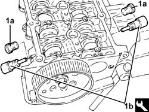
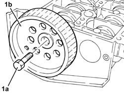
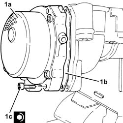
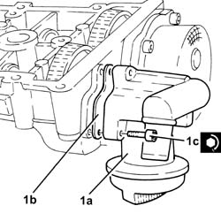

1036C14 CAMSHAFT IN CAMSHAFT HOUSING - R.R WITH CAMSHAFT HOUSING REMOVED - INCLUDES CAMSHAFT HOUSING REPLACEMENT, IF NECESSARY
- Path
- Procedures > 10 ENGINE > 1036 TIMING SYSTEM > 1036L CAMSHAFT (2) IN CAMSHAFT HOUSING (1) > 1036C14 CAMSHAFT IN CAMSHAFT HOUSING - R.R WITH CAMSHAFT HOUSING REMOVED - INCLUDES CAMSHAFT HOUSING REPLACEMENT, IF NECESSARY
- Kind
- repair procedure (removal / refitting; the operation number is the code)
- Applies to
- engines: 1.9 JTD 16v; all production periods
- Interactive page
- https://sloeber94.github.io/elrnDB-fCrm/en/#/194000170
Applies to: engines: 1.9 JTD 16v; all production periods
 Removing
Removing
 Refitting
Refitting1. Position the cylinder head extension (1a) in a vice using the tool (1b).
Tool | Description | Function | Validity |
|---|---|---|---|
1860470001 | Support | Overhaul cylinder head | 1.8 2.2 1.9 JTD 8V 1.9 JTD 16V |

Applies to: engines: 1.9 JTD 16v; all production periods
1. Undo the bolts (1a) and remove the engine oil filler (1b).
2. Remove the gasket.

Applies to: engines: 1.9 JTD 16v; all production periods
1. Undo the bolts (1a) and remove the vacuum unit (1b).
2. Remove the gasket.

Applies to: engines: 1.9 JTD 16v; all production periods
1. Undo the bolt (1a) and remove the cam angle sensor (1b).

Applies to: engines: 1.9 JTD 16v; all production periods
Check that the camshaft endfloat is within the recommended values using a dial gauge.
1. Remove the plugs (1a) and fit camshaft timing tools (1b) on the camshaft housing.
Tool | Description | Function | Validity |
|---|---|---|---|
1870896900 | Template | Engine tuning | 1.9 JTD 16V |

Applies to: engines: 1.9 JTD 16v; all production periods
1. Undo the bolts fixing the camshaft gears.

Applies to: engines: 1.9 JTD 16v; all production periods
1. Undo the bolt (1a) and remove the exhaust side camshaft toothed drive pulley (1b).

Applies to: engines: 1.9 JTD 16v; all production periods
Remove the camshaft timing tools from the cylinder head extension.
Tool | Description | Function | Validity |
|---|---|---|---|
1870896900 | Template | Engine tuning | 1.9 JTD 16V |
1. Wtihdraw the camshafts (1a), as far as necessary and remove the camshaft gears (1b).

Applies to: engines: 1.9 JTD 16v; all production periods
1. Using a suitable drift, extract the inlet side camshaft (1a) and plug (1b).
2. Using a suitable drift, extract the exhaust side camshaft (2a) and oil seal (2b).

Applies to: engines: 1.9 JTD 16v; all production periods
Refitting
RemovingPlace the camshafts in their housings.
Place the camshaft gears in their housings and secure them without tightening the bolts.
1. Fit the camshaft timing tools.
Tool | Description | Function | Validity |
|---|---|---|---|
1870896900 | Template | Engine tuning | 1.9 JTD 16V |

Applies to: engines: 1.9 JTD 16v; all production periods
1. Tighten the camshaft gear fixing bolts to the recommended torque.
Component | Fastening | dia | Value (daNm) | Validity |
|---|---|---|---|---|
Camshaft gears | Bolt | M12 | (camshaft side) 2.9 - 3.2 + 40° | 1.9 JTD 16v |

Applies to: engines: 1.9 JTD 16v; all production periods
1. Fit the exhaust side camshaft front oil seal (1a) using the tool (1b).
Tool | Description | Function | Validity |
|---|---|---|---|
1870896800 | Fitting tool | Fitting exhaust camshaft oil seal | 1.9 JTD 16V |

Applies to: engines: 1.9 JTD 16v; all production periods
Fit the intake side camshaft plug.
Refit the exhaust side camshaft toothed pulley and secure by screwing in the bolt without tightening.
1. Position the cam angle sensor (1a) in its housing and secure it tightening the bolt (1b) to the recommended torque.
Component | Fastening | dia | Value (daNm) | Validity |
|---|---|---|---|---|
Cam angle sensor | Bolt (pretreated to be replaced for 1.9 JTD 8v) | M6 | (cylinder head extension side) 0.8 - 1.0 | 1.9 JTD 8V 1.9 JTD 16v 2.4 JTD 20v |

Applies to: engines: 1.9 JTD 16v; all production periods
1. Place the vacuum pump (1a), complete with gasket (1b), back in its housing and secure it tightening the bolts (1c) to the recommended torque.
Component | Fastening | dia | Value (daNm) | Validity |
|---|---|---|---|---|
Vacuum unit | Bolt (pretreated to be replaced) | M6 | (cylinder head extension side) 0.5 + 50° | 1.9 JTD 16v 2.4 JTD 20v |

Applies to: engines: 1.9 JTD 16v; all production periods
1. Place the engine oil filler fitting (1a), complete with gasket (1b), back in its housing and secure it tightening the bolts (1c) to the recommended torque.
Component | Fastening | dia | Value (daNm) | Validity |
|---|---|---|---|---|
Engine oil filler | Bolt | M6 | (cylinder head extension side) 0.8 - 1.0 | 1.9 JTD 16v 2.4 JTD 20v |

Applies to: engines: 1.9 JTD 16v; all production periods
Remove the support tool complete with cylinder head extension from the vice and separate them.